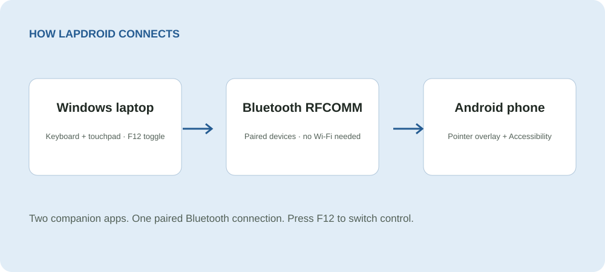

Use the input you already have
Type with your physical keyboard and use your touchpad to move the floating Android pointer.
Windows + Android · Bluetooth
Use your Windows keyboard and touchpad to control an Android phone over Bluetooth. Type, tap, drag, and scroll without a Wi-Fi connection.
Two companion apps. One paired Bluetooth connection. Press F12 to switch control.

Type with your physical keyboard and use your touchpad to move the floating Android pointer.
Left click taps, right click goes Back, middle click goes Home, and touchpad scrolling moves through pages.
The Windows and Android apps communicate through Bluetooth RFCOMM. The Android app does not request Internet permission.
Get started
Windows 10 or 11, Android 8.0 or later, Bluetooth on both devices, and both Lapdroid companion apps. Android overlay and Accessibility permissions are required for pointer display and input control.
Android permissions must be enabled before input can work. Install the APK on Android; the AAB is a publishing bundle, not a direct-install package. Bluetooth behavior can vary by device.
How it works
Made by Silviu Vlasceanu
Help keep Lapdroid moving forward with a tip, a bug report, or a contribution.